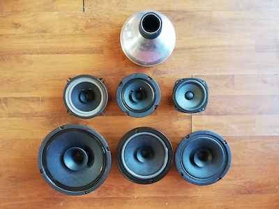

AugMut : trombone actuated mute

This project presents a custom-built synthesizer interface that uses Arduino microcontrollers
combined with capacitive touch sensors to create a novel performance instrument.
Features
- Multi-touch sensing with Arduino
- Custom enclosure designed for ergonomics
- Integration with Max/MSP for sound control
Downloads & Resources
Download schematics and code